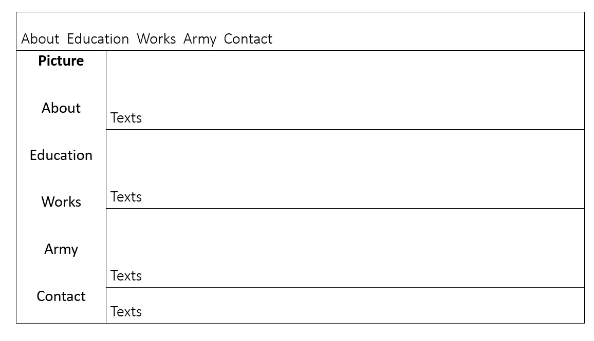

שאלות הכוונה לתכנון UX :
-
מה קהל היעד של האתר? עובדים במחלקת HR של חברות אליהן אשלח את קורות
החיים.
-
מה המטרה הראשית של האתר? להציג את הקורות חיים שלי בצורה הטובה ביותר.
- מה המטרות המשניות? היכרות מי זאת דניאלה סלע בצורה שתצייר עניין
- מה הפעולות שאתם רוצים שהמשתמש יבצע באתר? מעבר בין קטגוריות
- מה מדדי ההצלחה? צפייה בעמוד כולו, זמן שהיה באתר של 2 דקות
- לאיזה עולם תוכן האתר מתייחס? תוכן של גיוס
שאלות הכוונה לתכנון UI :

בכל פעם שהמשתמש יגולל למטה החלק העליון והתמונה ישארו סטטים. לחיצה על כל
אחת מהכותרות בחלק העליון תוריד את העמוד לחלק המתאים. בכל פעם שנגיע לחלק
חדש הכותרת תופיע באפקט אחר.
- מה סכמת הצבעים של האתר צבעים מונוכרומטים (MONOCHROMATIC)?
- מה הפונטים של האתר ? font-family: cursive;
- איזה images יהיו באתר ? תהיה תמונה שלי.